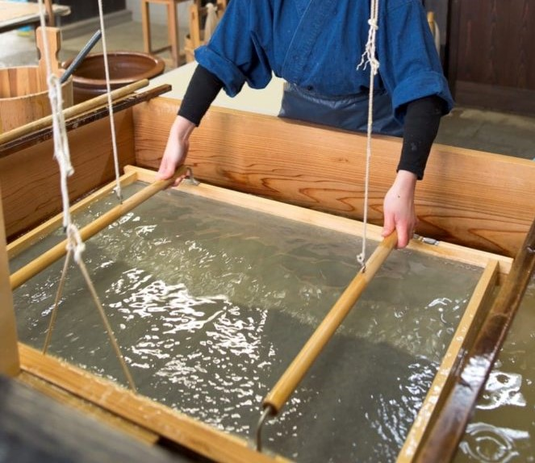
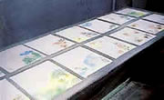
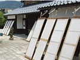
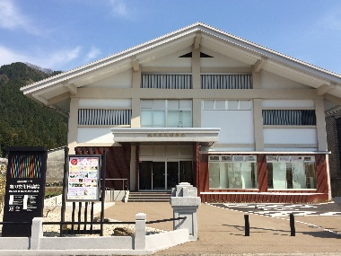
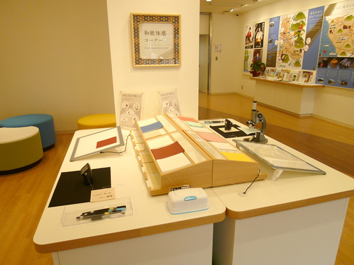

え ： 越前和紙 紙の王に ふさわしい紙
一言でいうと？
1500年の歴史が詰まった最高品質の和紙
主に今立(いまだて)地区で作られている歴史の古い和紙です。
昭和51年、越前市では越前打刃物に続いて2番目に伝統工芸品の指定を受けました。
また、越前奉書と越前鳥の子紙は国の重要無形文化財となっています。
特徴は？
種類と品質！
越前和紙の特徴は、豊かな感性を刺激する生成色(きなり)の優雅な美しさと高い品質。
種類がたくさんあることと質の高さでは全国1を誇っています！
つくり方は？
最初は水？厚みを作って干す！
主な原料は楮(こうぞ)、三椏(みつまた)、雁皮(がんぴ)という、植物の皮の繊維(せんい)などを使います。
これですこしとろっとした水のような原料をつくり、その中に簀桁(すげた)という道具を入れて前後にゆすって少しずつ厚みを出します。
(これを「和紙を漉(す)く」と言います！)
▼簀桁(すげた)
外して圧力をかけて水分をしぼったあと、乾かせば完成です！
歴史は？
今も昔もたくさん使われてきました
約1500年前、川上御前が今立五箇の村人たちに紙すきを伝えたのが始まりです。
戦国時代になり、紙がたくさん使われるようになると、越前和紙はその品質の高さから高級紙として使われるようになりました。
特に「越前奉書」という和紙は、『御上天下一』の印を使うことが許されて江戸幕府でよく使われるようにになり、「越前鳥の子紙」は「紙の王にふさわしい紙」といわれて桂離宮というふすまなどに使われました。
越前和紙はとっても格式高いものだったのです！
(この2つの和紙は国の重要無形文化財に登録されています。)
現代では小さな名刺、ハガキなどのふだん使いのものから、越前奉書紙などの格式の高い紙まで幅広く使われています。
もっとよく知るには？
越前和紙の里
越前和紙の体験ができる「パピルス館」、工芸士のわざを見ることができる「卯立の工芸館」、越前和紙の発祥や歴史などを展示する「紙の文化博物館」など、越前和紙にまつわる体験や見学を楽しむことができるエリアです。
▼パピルス館

住所 ≫ 越前市新在家町8-44
営業時間 ≫ 9：00～16：00
休館日 ≫ 年末年始
電話 ≫ 0778-42-1363
自分だけの和紙を作ることができるパピルス館。はがきやしおりの他、うちわやランプシェードを作ることもできます！
▼卯立(うだつ)の工芸館

住所 ≫ 越前市新在家町9-21-2
営業時間 ≫ 9：30～17：00(紙漉き見学は16:00まで)
休館日 ≫ 毎週火曜日(祝日は営業)・年末年始
電話 ≫ 0778-43-7800
伝統工芸士が昔ながらの道具を使って和紙を漉く様子や、屋外での和紙の天日干しを見ることができます。
▼紙の文化博物館
 
住所 ≫ 越前市新在家町11-12
営業時間 ≫ 9：30～17：00
休館日 ≫ 毎週火曜日(祝日は営業)・年末年始
電話 ≫ 0778-42-0016
越前和紙の歴史を知ることができる他、道具や越前和紙の作品の展示もしています。
こちらも越前市の伝統工芸品といったら…ですよね！学校の卒業証書を漉きに行ったことがあるという方も多いのではないでしょうか。(私も行きました！)「でっかいかるたで大合戦！！」で使用したでっかいかるたは、この越前和紙を段ボールに貼り合わせて制作していますし、この越前かるたの説明書も越前和紙を使っています。